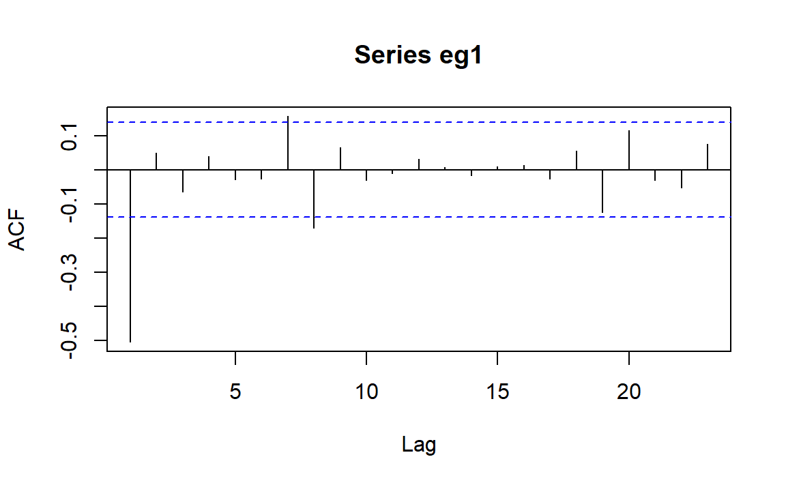
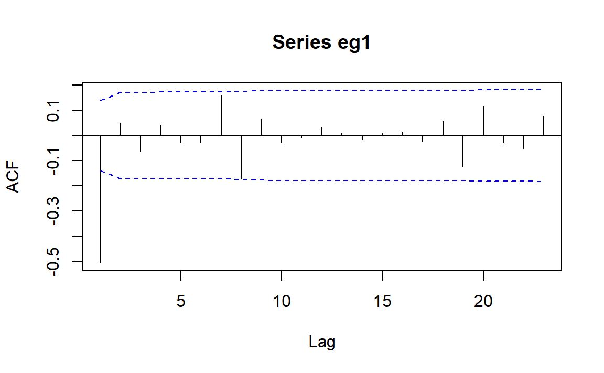
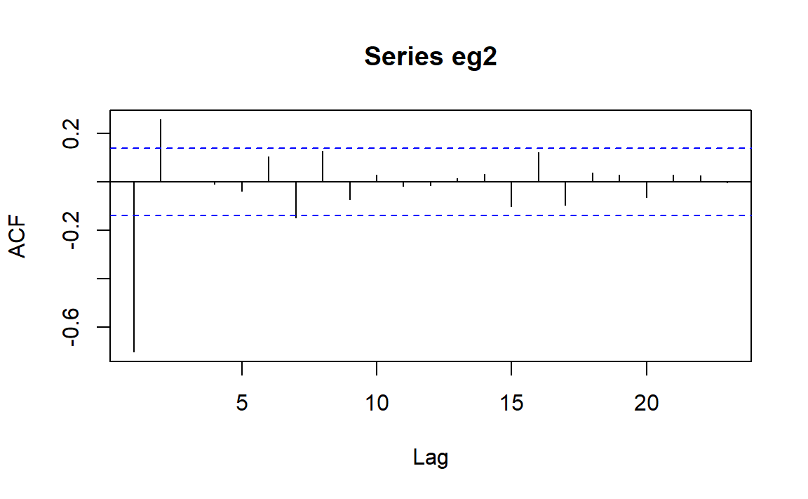
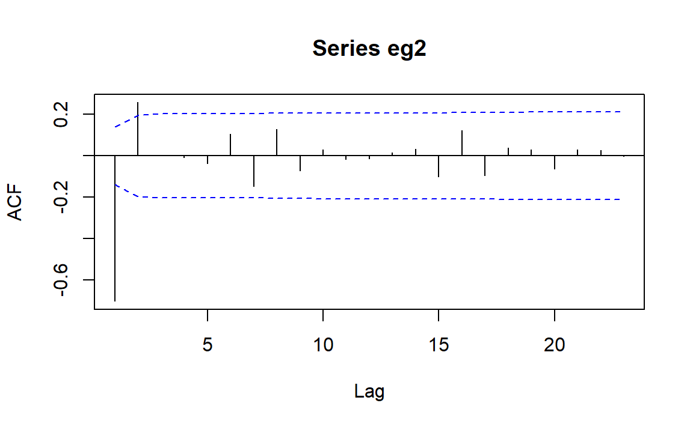
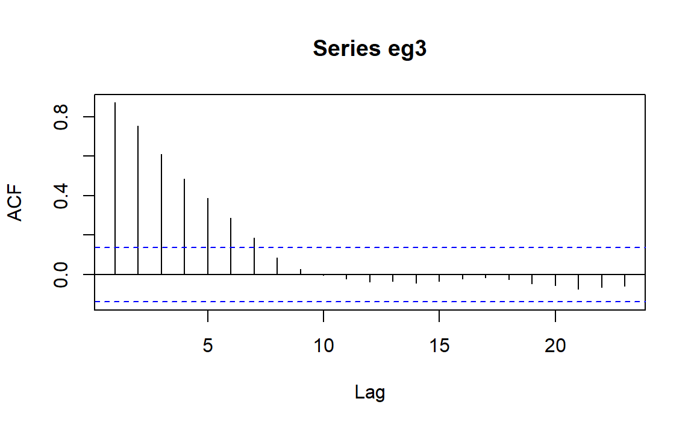
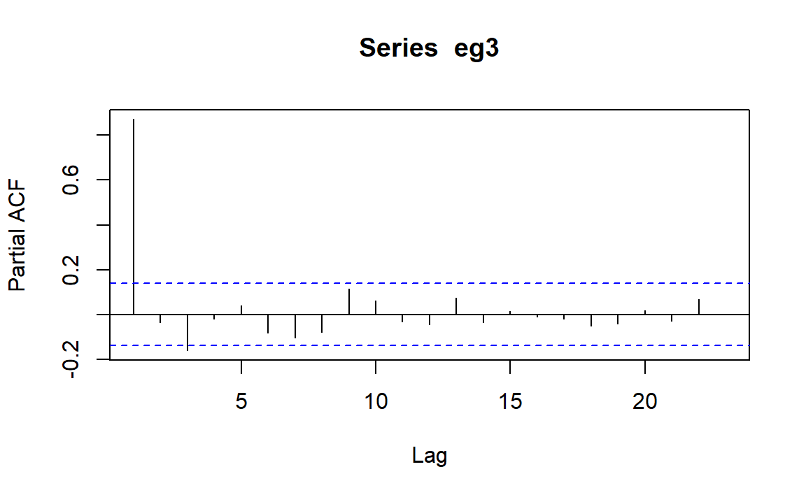
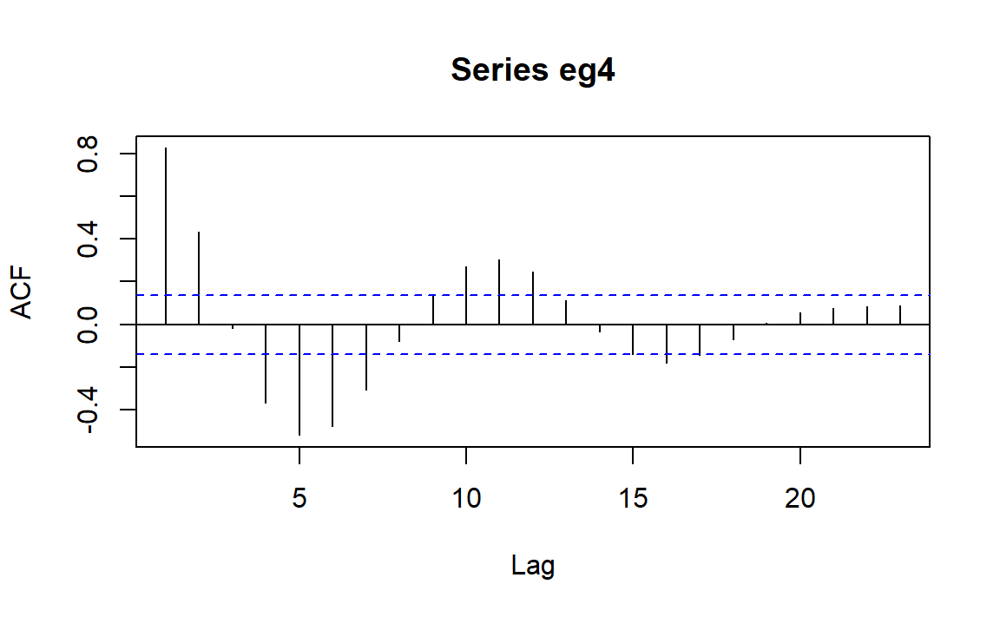
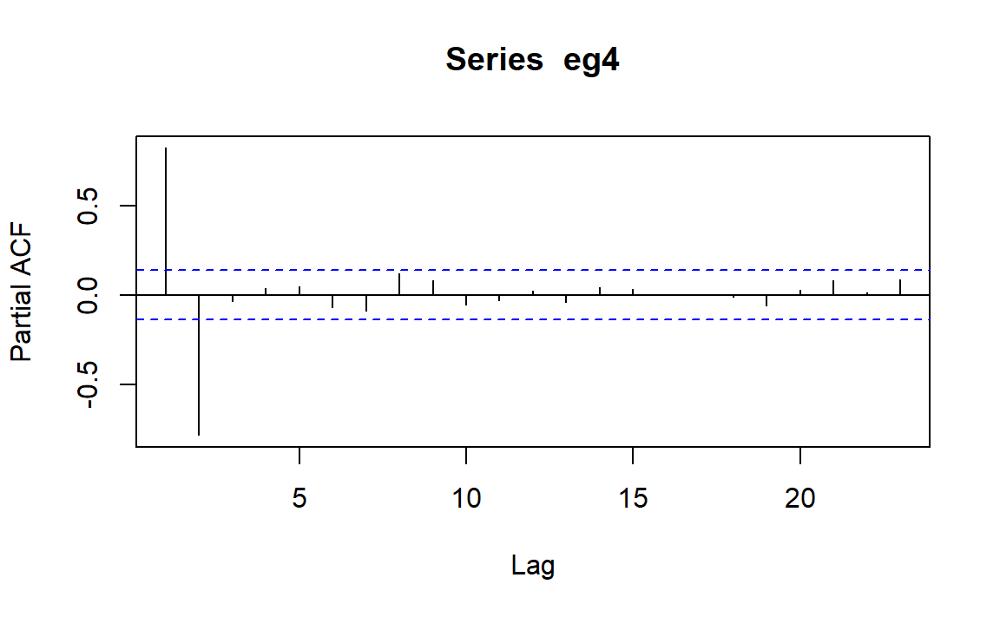
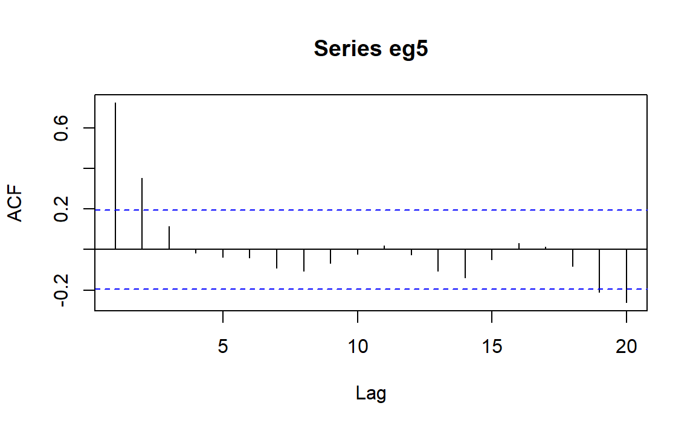
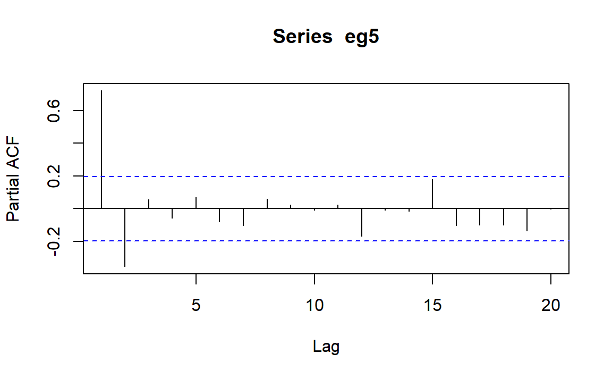

3 模型识别
本章主要学习，对于给定的时间序列，如何选取适当的\(p,d,q\)，从而建立\(ARIMA(p,d,q)\)模型。
3.1 主要方法
利用样本自相关函数估计\(MA(q)\)模型的自相关函数，再利用模型自相关函数的截尾性估计\(q\)
利用样本偏自相关函数估计\(AR(p)\)模型的偏自相关函数，再利用模型偏自相关函数的截尾性估计\(p\)
利用拓展的自相关系数估计\(ARMA(p,q)\)模型的\(p,q\)
3.2 实践操作
3.2.1 例1
理论模型\(MA(1)\)： \[ Y_t = e_t-0.9e_{t-1} \]
时间序列数据：
下面我们开始模型识别。
先绘制样本自相关函数图：

利用函数
acf绘制样本自相关图。上下两条虚线表示，自相关系数是否显著为0的临界值。此时的临界值是基于白噪声过程中的近似大样本标准误差，即\(1/\sqrt{n}\)。
可以看到滞后1阶ACF值显著不为0，滞后7，8阶稍微超过临界值。可以考虑一下\(MA(q)\)模型。
修正一些ACF临界值：

可以看到，此时只有滞后1阶ACF显著不为0，意味着我们可以考虑为这个序列拟合\(MA(1)\)模型。
3.2.2 例2
理论模型\(MA(2)\)： \[ Y_t = e_t-e_{t-1}+0.6e_{t-2} \]
时间序列数据：
下面我们开始模型识别。
先绘制样本自相关函数图：

可以看到比较明显的滞后截尾性，滞后1，2阶ACF值显著不为0，滞后7阶稍微超过临界值。可以考虑一下\(MA(q)\)模型。
修正一下ACF临界值：

可以看到，此时只有滞后1，2阶ACF显著不为0，意味着我们可以考虑为这个序列拟合\(MA(2)\)模型。
3.2.3 例3
理论模型\(AR(1)\)： \[ Y_t = 0.9Y_{t-1}+e_t \]
时间序列数据：
下面我们开始模型识别。
先绘制样本自相关函数图：

与理论图像1.5不太一致，样本ACF更像是线性递减而不是指数递减，并且不是一直保持大于0。但这并不影响我们去考虑\(AR(p)\)模型。
观测样本偏自相关系数PACF图像：

可以看到，此时滞后1阶PACF显著不为0，滞后3阶稍微超过临界值，意味着我们可以考虑为这个序列拟合\(AR(1)\)模型，但在模型诊断时需要进一步研究滞后3阶的显著性。
3.2.4 例4
理论模型\(AR(2)\)： \[ Y_t = 1.5Y_{t-1}-0.75Y_{t-2}+e_t \]
时间序列数据：
下面我们开始模型识别。
先绘制样本自相关函数图：

图像呈阻尼正弦波动曲线，可以考虑一下\(AR(p)\)模型。
观测样本偏自相关系数PACF图像：

可以看到，此时只有滞后1，2阶PACF显著不为0，意味着我们可以考虑为这个序列拟合\(AR(2)\)模型。
3.2.5 例5
理论模型\(ARMA(1,1)\)： \[ Y_t = 0.6Y_{t-1}+e_t+0.3e_{t-1} \]
时间序列数据：
下面我们开始模型识别。
先绘制样本自相关函数图：

样本PACF：

综上，看起来我们应该为序列拟合\(AR(1)\)模型。
但是，我们看一下拓展的自相关系数EACF：
eacf(eg5)
#> AR/MA
#> 0 1 2 3 4 5 6 7 8 9 10 11 12 13
#> 0 x x o o o o o o o o o o o o
#> 1 x o o o o o o o o o o o o o
#> 2 x x o o o o o o o o o o o o
#> 3 x o o o o o o o o o o o o o
#> 4 x x o x o o o o o o o o o o
#> 5 x o x x o o o o o o o o o o
#> 6 x x x o o o o o o o o o o o
#> 7 x x o o o o o o o o o o o o这表示我们应该为该序列拟合\(ARMA(1,1)\)模型。
接下来我们看一下前4个例子的EACF：
eacf(eg1)
#> AR/MA
#> 0 1 2 3 4 5 6 7 8 9 10 11 12 13
#> 0 x o o o o o x x o o o o o o
#> 1 x x o o o o o x o o o o o o
#> 2 x x o o o o o x o o o o o o
#> 3 x x o o o o o x o o o o o o
#> 4 x x x o x o o x o o o o o o
#> 5 x o o o x o o x o o o o o o
#> 6 x x x x x x o x o o o o o o
#> 7 x x o o o x o o o o o o o o
eacf(eg2)
#> AR/MA
#> 0 1 2 3 4 5 6 7 8 9 10 11 12 13
#> 0 x x o o o o x o o o o o o o
#> 1 x x x o o o o o o o o o o o
#> 2 x x o o o o o o o o o o o o
#> 3 x x x x x o o o o o o o o o
#> 4 x o x x x o o o o o o o o o
#> 5 x x x x x o o o o o o o o o
#> 6 o x x o o o o o o o o o o o
#> 7 x o o o o o o o o o o o o o
eacf(eg3)
#> AR/MA
#> 0 1 2 3 4 5 6 7 8 9 10 11 12 13
#> 0 x x x x x x x o o o o o o o
#> 1 o x o o o o o o o o o o o o
#> 2 x x o o o o o o o o o o o o
#> 3 o x o o o o o o o o o o o o
#> 4 x o x o o o o o o o o o o o
#> 5 x o x o o o o o o o o o o o
#> 6 x x x x o o o o o o o o o o
#> 7 x o x x o x o o o o o o o o
eacf(eg4)
#> AR/MA
#> 0 1 2 3 4 5 6 7 8 9 10 11 12 13
#> 0 x x o x x x x o o x x x o o
#> 1 x x o x x x x o x x x x o o
#> 2 o o o o o x o o o o o o o o
#> 3 x o o o o x o o o o o x o o
#> 4 x x o o o o o o o o o x o o
#> 5 x x o o o o o o o o o x o o
#> 6 x x o o o o o o o o o o o o
#> 7 x x o o x o o o o o o o o o均支持我们之前的模型假设。